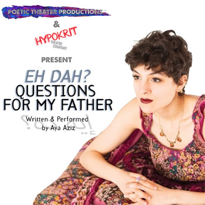

past performance |
|||
|
After its successful run in the 2016 New York Musical Festival, Poetic Theater Productions and Hypokrit Theatre Company present Eh Dah? Questions For My Father WINNER of “Outstanding Book” and “Outstanding Individual Performance” 2016 New York Musical Festival Book, Music and Lyrics By – Aya Aziz |
 | ||
showtimes & tickets:September 24 & 25 @ 8PM “Ghetto-Hippie-Arab-Commie-China Doll” Aya was shaped by the eclectic community of New York City. But Aya’s father, an Egyptian-American world-traveler, remained a mystery, as did her Muslim family. In this solo musical, Aya enacts the world she came from and the family she went in search of. With a range of accents, voices, and zany characters, Aya’s story deals with contemporary conflicts – identity, the culture war, Islamophobia, all while asking Eh Dah – what is this?! This productions is being brought back to the stage by Poetic Theater Productions and Hypokrit Theatre Company after its official selection and successful run in the New York Musical Theatre Festival 2016. |
|||
upcoming performances |
|||
 |
|||
| EVQ Film Festival 2018 August 20-25 |
|||
performance archives |
|||
| 2018 | 2017 | 2016 | 2015 |
| 2014 | 2013 | 2012 | 2011 |
| 2010 | 2009 | 2008 | 2007 |